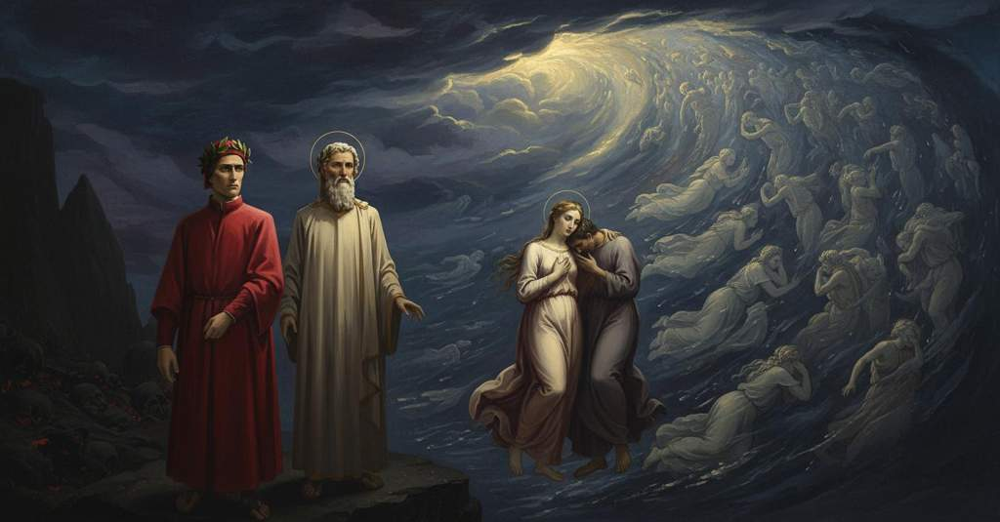

Inferno — Canto 5

Riassunto Summary 要約
Nel secondo cerchio, dopo aver incontrato Minosse, Dante vede i lussuriosi travolti da una bufera e, commosso, ascolta la storia di Paolo e Francesca, per la cui pietà alla fine sviene.
In the second circle, after encountering Minos, Dante sees the lustful swept by a storm and, moved by pity, listens to the story of Paolo and Francesca, ultimately fainting from compassion for them.
第二の圏でミノスに会った後、ダンテは嵐に翻弄される色欲者たちを目にし、哀れに思い、パオロとフランチェスカの物語を聞き、その悲運への同情から最後には気を失う。
Segmento 1 1–24
Disceso dal primo cerchio al secondo, il narratore trova un luogo più stretto ma pieno di un dolore molto più grande che provoca lamenti. Lì, il mostruoso Minosse ringhia, esamina le colpe di ogni anima che arriva e la giudica. Egli si cinge con la coda tante volte quanti sono i gradi che l'anima deve scendere. Quando Minosse vede il narratore, interrompe il suo compito per metterlo in guardia su come entra e di chi si fida. Virgilio però lo zittisce, affermando che il viaggio è voluto da un potere superiore e di non fare altre domande.
Having descended from the first circle to the second, the narrator finds a smaller place filled with a much greater pain that provokes wailing. There, the monstrous Minos snarls, examines the sins of each arriving soul, and judges it. He wraps his tail around himself a number of times equal to the levels the soul must descend. When Minos sees the narrator, he interrupts his task to warn him about how he enters and whom he trusts. Virgil, however, silences him, stating that the journey is willed by a higher power and he should ask no more questions.
第一の圏から第二の圏へ下りると、語り手はそこがより狭いが、嘆きを引き起こすほどのはるかに大きな苦痛に満ちた場所であることに気づく。そこでは、恐ろしいミノスが唸りながら、到着する各々の魂の罪を調べ、裁いている。彼は魂が下るべき階層の数だけ、自身の体に尾を巻きつける。ミノスは語り手を見ると、その務めを中断し、どのように入り、誰を信じるかについて警告する。しかしウェルギリウスは、この旅はより高次の力によって望まれたものであると述べ、それ以上問うなと彼を黙らせる。
Segmento 2 25–51
Il narratore giunge in un luogo privo di luce, dove una bufera infernale senza sosta tormenta gli spiriti. Apprende che a tale tormento sono condannati i peccatori carnali, coloro che sottomisero la ragione al desiderio. Le anime vengono trascinate incessantemente dal vento, come stormi di storni e gru, senza alcuna speranza di riposo o di pena minore. Vedendo una schiera di ombre in particolare, il narratore chiede a Virgilio chi siano quelle genti punite dall'aria nera.
The narrator arrives in a place devoid of light, where a ceaseless infernal storm torments the spirits. He learns that to such a torment are condemned the carnal sinners, those who submitted reason to desire. The souls are incessantly dragged by the wind, like flocks of starlings and cranes, without any hope of rest or of lesser pain. Seeing one line of shades in particular, the narrator asks Virgil who those people punished by the black air are.
語り手は光のない場所に到着する。そこでは絶え間ない地獄の嵐が亡霊たちを苦しめている。彼は、そのような責め苦に処されているのは、理性を欲望に屈させた肉欲の罪人たちであることを知る。魂たちは、休息や苦しみの軽減の望みもなく、ムクドリや鶴の群れのように、絶えず風に流されている。特に一列に並んだ影を見て、語り手はウェルギリウスに、その黒い大気に罰せられている人々が誰なのかと尋ねる。
Segmento 3 52–87
Virgilio inizia a elencare al narratore le anime dei lussuriosi, indicando tra le altre Semiramide, Didone, Cleopatra, Elena, Achille e Tristano, e nominando più di mille spiriti che morirono per amore. Udendo ciò, il narratore è sopraffatto dalla pietà e chiede di poter parlare con due anime che procedono insieme, particolarmente leggere nel vento. Virgilio lo invita a pregarle di avvicinarsi in nome dell'amore che le unisce. Quando il narratore le chiama, le due anime si separano dalla schiera di Didone e volano verso di lui, simili a colombe che tornano al nido.
Virgil begins to list the souls of the lustful for the narrator, pointing out among others Semiramis, Dido, Cleopatra, Helen, Achilles, and Tristan, and naming more than a thousand spirits who died for love. Hearing this, the narrator is overcome with pity and asks to speak with two souls who proceed together, seeming particularly light on the wind. Virgil invites him to ask them to approach in the name of the love that unites them. When the narrator calls to them, the two souls separate themselves from the flock of Dido and fly toward him, like doves returning to the nest.
ウェルギリウスは語り手に向けて肉欲の罪を犯した魂の名を挙げ始め、セミラミス、ディードー、クレオパトラ、ヘレナ、アキレウス、トリスタンなどを指し示し、愛のために死んだ千以上の霊の名を口にする。それを聞いた語り手は憐れみに打ちひしがれ、風の中で特に軽やかに共に進む二つの魂と話したいと願う。ウェルギリウスは、二人を結びつけている愛の名において、近づいてくれるよう頼むようにと促す。語り手が呼びかけると、その二つの魂はディードーのいる群れから離れ、巣に戻る鳩のように、彼の方へと飛んでくる。
Segmento 4 88–142
Una delle due anime, Francesca, si rivolge al narratore e racconta come Amore prese lei e il suo amante, Paolo, conducendoli a una morte violenta, e aggiunge che Caina attende chi li uccise. Mosso da pietà, il narratore chiede a Francesca come nacque il loro amore. Lei risponde che, mentre leggevano per diletto la storia di Lancillotto, soli e senza sospetto, giunsero al punto in cui l'amante bacia il sorriso desiderato. A quel punto, Paolo, tremante, la baciò, e quel libro fu il loro "Galeotto". Mentre Francesca parla, l'altro spirito piange; il narratore, sopraffatto dalla pietà per la loro sorte, sviene e cade a terra come un corpo morto.
One of the two souls, Francesca, addresses the narrator and recounts how Love seized her and her lover, Paolo, leading them to a violent death, and adds that Caina awaits the one who killed them. Moved by pity, the narrator asks Francesca how their love began. She replies that while they were reading the story of Lancelot for pleasure, alone and without suspicion, they reached the point where the lover kisses the desired smile. At that moment, Paolo, trembling, kissed her, and that book was their "Gallehaut." While Francesca speaks, the other spirit weeps; the narrator, overcome with pity for their fate, faints and falls to the ground like a dead body.
二つの魂のうちの一人、フランチェスカが語り手に語りかけ、いかにして愛が彼女とその恋人パオロを捉え、非業の死へと導いたかを物語り、二人を殺した者をカイナが待ち受けていると付け加える。憐れみに心を動かされた語り手は、フランチェスカに二人の愛がどのように始まったのかを尋ねる。彼女は、二人きりで疑いもせず気晴らしにランスロットの物語を読んでいた時、恋人が憧れの微笑みに口づけをする場面に至ったと答える。その瞬間、パオロは震えながら彼女に口づけし、その本が二人にとっての「ガレオット」となった。フランチェスカが語る間、もう一方の魂は泣いており、二人の運命への憐れみに打ちのめされた語り手は、気を失い、死体のように地面に倒れる。